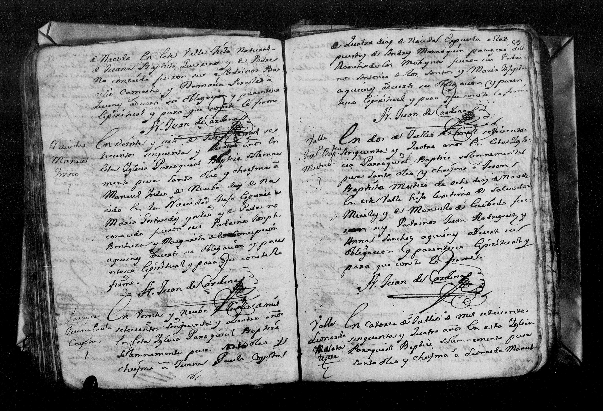

← Volver al Archivo Central
Expediente Histórico: 1

Manuscrito Original (Clic para ampliar)
Transcripción Paleográfica
Perfil: Matrimonio de Joseph Miguel Garcia y Francisca Xaviera Ramos
Descripción: Acta de matrimonio de Joseph Miguel Garcia y Francisca Xaviera Ramos fechada el 1 de octubre de 1761.
Transcripción:
En Primero de Octubre de mil setecientos secenta
y un años haviendo procedido las informaciones
y proclamas dispuetas por el sto concilio de Tren
to y no haviendo resultado impedimento Alguno
despose [...] a Joseph Miguel Garcia Originario
y Vezino deste Real con Francisca Xaviera Ramos Origina
ria de la Jurisdiccion del Saltillo y Vezina de es
te dicho Real haviendo sido examinados en la Doc
trina Christiana; siendo Testigos Francisco Juares
y Juan de Leon Y para que conste lo firme
Fr. Jph Joaquin de Jesus [rubrica]